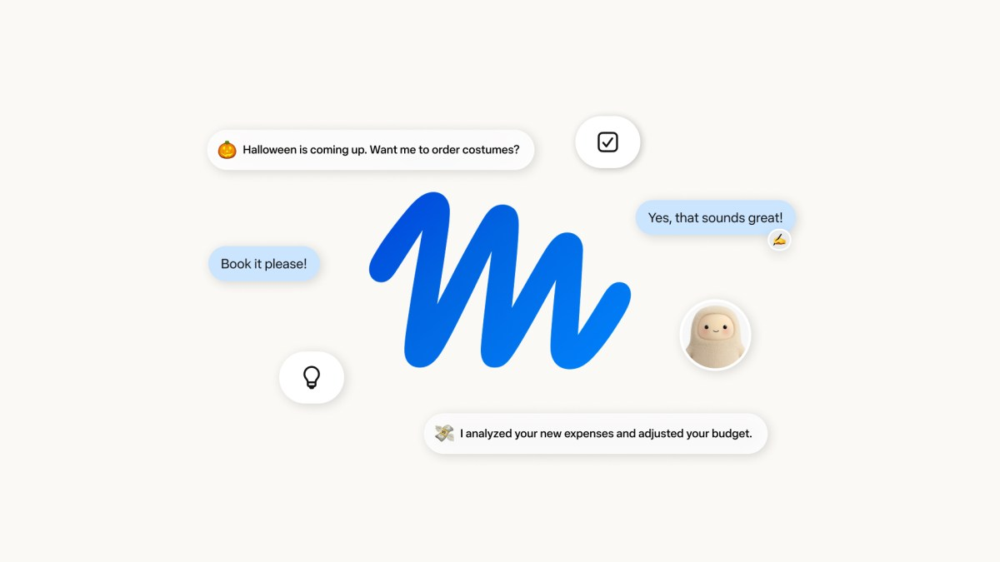

Threads｜Meta Muse 的「語音靈感助手」敘事：已確認能力與尚待驗證的下載數字

一句話摘要
這篇貼文抓到「靈感捕捉 → 自動整理 → 後續執行」的真實需求；不過 Meta 官方目前可確認的核心是可持續工作的個人 AI Agent，而不是已被公開規格化的語音筆記 App。
Threads 貼文的主張
作者 `j3m_ai` 表示 Meta 的 Muse 在 22 天內取得 500 萬下載，並描繪一條適合通勤、散步時使用的工作流程：開啟語音常駐模式說出靈感、由 AI 去除口語雜訊並生成行動清單與文案草稿，再同步到手機筆記或傳至社群後台。這些是社群貼文描述，並非本次可直接由官方公告逐項驗證的產品功能清單。
Meta 官方可確認的 Muse 能力
Meta 2026-09-08 的產品公告指出：
- Muse 是能執行任務與推進長期目標的個人 AI Agent，不只回答問題。
- 它運行在每位使用者專屬的 **Muse Secure VM**，具備自己的瀏覽器，可跨日常應用程式操作。
- 使用者關閉 App 後，耗時任務仍可繼續進行；碰到寄信、購買等敏感操作時，Muse 會回來要求批准。
- Muse 可依使用者授權操作應用程式；官方說明包括開啟瀏覽器、填表、寄信、訂旅行與協商等任務範例。
- 使用者可選擇連接哪些 App 與授予的存取範圍，隨時變更或中斷服務；官方也表示可選擇不讓互動用於訓練 Meta AI 模型。
- 公告當時的正式 rollout 範圍為美國 iOS、Android 與 `muse.ai`，並規劃後續支援 AI 眼鏡。
尚未被本次查核確認的部分
- 「22 天 500 萬下載」：官方公告未提供該數字，本次也未取得可獨立佐證的來源。
- 「語音常駐模式」及「過濾口語雜訊」：官方頁面說明可在 Muse App 或 WhatsApp 像傳訊息般互動，但未在本次擷取內容中列為語音筆記功能規格。
- 「一鍵同步到手機筆記／社群後台」：官方已確認可跨應用工作，但未列出這兩項固定整合或一鍵發布流程。
對欒帥的可實作啟發
不必等特定產品功能完整落地，這個場景可拆為較可靠的工作流：
- 用手機語音備忘錄或訊息草稿快速收集靈感，重點是降低輸入摩擦。
- 交給 AI 轉成「一句核心想法、受眾、下一步、貼文初稿」四格結構，而非只做逐字稿。
- 最後由人類確認事實、語氣、敏感資訊與發布渠道；特別是連到社群帳號、Email 或付費操作時。
- 若使用具有跨 App 權限的 Agent，先從唯讀資料與低風險草稿任務開始，再逐步開放寫入或代辦能力。
代理式工具的權限提醒
Muse 這類能持續執行、可連接 Email、行事曆或支付流程的 Agent，價值不只在整理語音，而在「將後續工作真的往前推」。也因此要先檢查連接範圍、操作紀錄、撤銷權限與敏感操作的人工確認。語音靈感本身通常低風險；一旦自動發信、發文、填表或購買，風險模型就不同了。